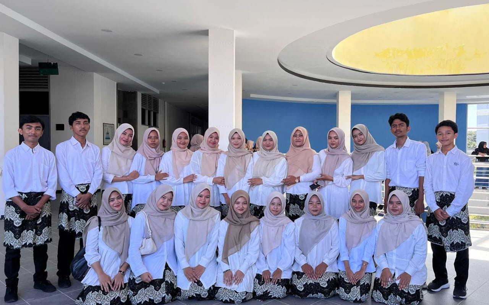
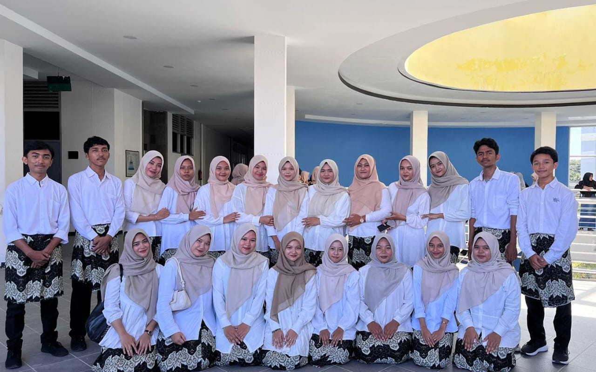

This is about me
saya adalah mahasiswa pendidikan matematika, yang bersemangat belajar dan mengembangkan pemahaman matematika. saya belajar untuk mengembangkan materi pembelajaran yang menarik dan mengekspolrasi metode pengajaran yang inovatif.
Di luar tugas kuliah, saya terlibat dalam organisasi himpunan pendidikan matematika yaitu HIMMAT, saya terlibat aktif dalam bidang minat dan bakat devisi paduan suara yang memungkinkan saya mengembangkan dan mempraktikan keterampilan saya.
- Full Name : Arinal Mardhiah Rahmadani
- Date of Birth: 26 September 2004
- Instagram : arinalmrdhrhmdni
- Email : arinalmardhiah@gmail.com
 

Educational Background
pendidikan saya di mulai daridari TK Aisyah Bustanul Athfal, SDN Tulaan, SMPN 1 Gunung Meriah, SMAS Insan Madani dan saat ini sedang menempuh perguruan tinggi di Universitas Syiah Kual. selama masa kuliah saya sudah berkembang dalam pembelajaran matematika, seperti aljabar, kalkulus, dan statistik. Dalam keteramplan saya sudah mengembangkan pemanfaatan perangkat pendidikan, seperti Geogebra, yang dapat membuat pembelajaran menarik dan interaktif bagi siswa
Teaching Experience
saya berkesempatan untuk mendapatkan pengalaman mengajar langsung melalui program MBKM USK UNGGUL praktik mengajar di SMAN 1 Gunung Meriah. Selama mbkm ini, saya membuat perangkat pembelajaran dan menilai pemahaman siswa terhadap konsep matematika. Hal ini, dapat meningkatkan keterampilam mengajar saya dan membantu saya belajar menyampaikan ide-ide kompleks dengan cara yang sederhana dan menarik.
Organizational Involment
selain kegiatan kuliah, saya juga merupakan anggota dari HIMMAT, sebuah organisasi mahasiswa di fkip matematika. Sebagai bagian dari divisi paduan suara, saya tidak hanya berkontribusi bagian itu saja, tetapi juga mengembangkan keterampilan kerja sama tim dan organisasi. Keterlibatan saya dalam HIMMAT telah menagjarkan tanggung jawab akademis dan ekstrakurikuler secara efekktif.